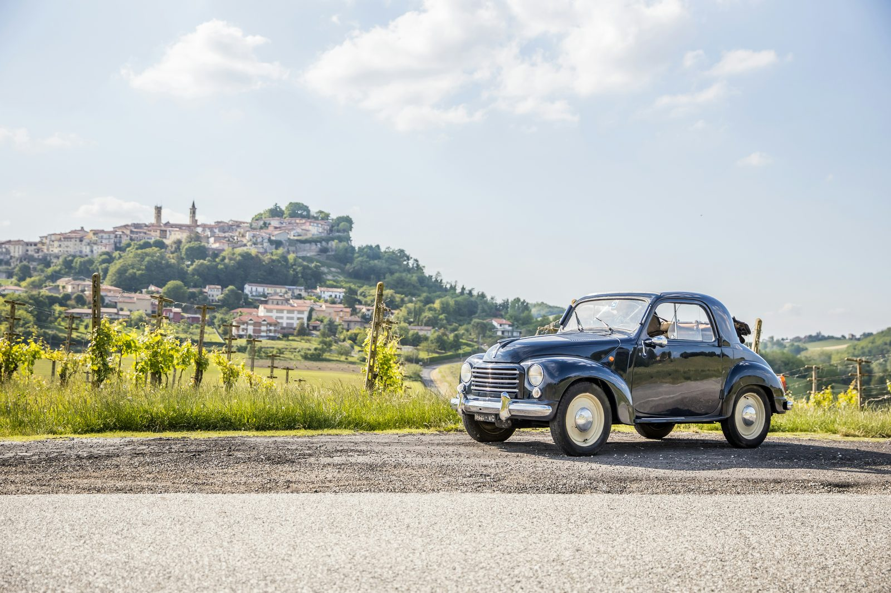
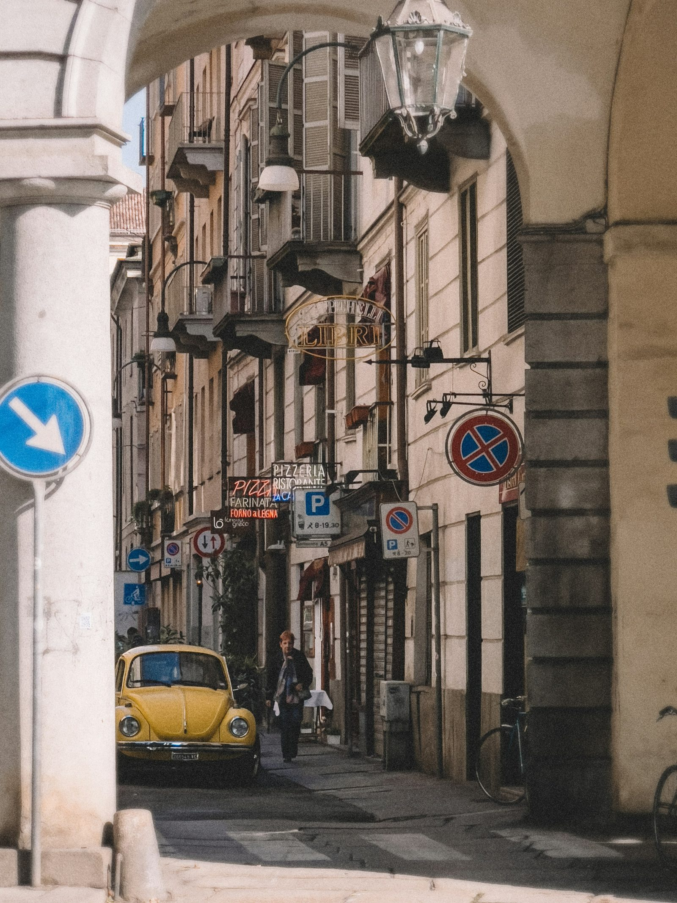

Explore the exciting world of Italian motors during Italian Motor Week24, featuring events showcasing automotive heritage, from Vespa World Days to vintage car workshops and more.
Esplora l'entusiasmante mondo dei motori italiani durante Italian Motor Week24, con eventi che mettono in mostra il patrimonio automobilistico, dai Vespa World Days alle officine di restauro delle auto d'epoca e altro ancora.
Italian Motor Week24 è una grande manifestazione che si svolgerà dal 13 al 21 aprile. L'evento è organizzato da Anci Città dei Motori insieme al Ministero del Turismo e all'Automobile Club d'Italia. Si prevedono centinaia di eventi in diverse città italiane.

Ci sono molte attività interessanti in programma. Ad esempio, i Vespa World Days si terranno a Pontedera e ci sarà un raid motoristico chiamato "la via di Corradino d'Ascanio" che partirà da Popoli. A Imola si terrà il World Endurance Championship, mentre a Maranello sarà possibile visitare le officine dove vengono restaurate auto d'epoca e supercar. A Monza ci sarà un villaggio dedicato alla sicurezza stradale.
Durante l'Italian Motor Week24, ci saranno anche visite guidate nei luoghi che hanno visto nascere personaggi leggendari come Enzo Ferrari a Modena e Maranello, Ferruccio Lamborghini a Sant'Agata Bolognese, e Achille Varzi a Galliate.

L'obiettivo dell'evento è ambizioso: superare le 100.000 presenze dell'anno scorso e riaccedere la passione dei fan dei motori italiani e internazionali. Il programma include la visita a musei e collezioni private, autodromi e città simbolo del motorsport, nonché luoghi dell'industria automobilistica italiana.
Il presidente di Maranello, Luigi Zironi, ha dichiarato che l'Italian Motor Week è un'opportunità per mostrare il patrimonio motoristico italiano in modo suggestivo ai turisti e ai visitatori. L'evento coinvolgerà decine di eventi a tema che cercheranno di emozionare gli appassionati.
Il ministro del Turismo, Daniela Santanché, ha sottolineato l'importanza dell'evento nel promuovere il turismo legato ai motori in Italia. Ha citato la Vespa come un'icona italiana celebrata durante i Vespa World Days, un evento che attira visitatori da tutto il mondo.
Anche il presidente dell'Automobile Club d'Italia, Angelo Sticchi Damiani, ha lodato l'iniziativa, sottolineando che l'Italia e i motori sono sinonimi di eccellenza riconosciuti globalmente. Questa settimana dedicata al Motor World italiano serve a celebrare e promuovere questo patrimonio di ingegneria, tecnologia ed eleganza.
Italian Motor Week24 è un evento importante per gli amanti dei motori che desiderano esplorare il meglio dell'industria automobilistica e motociclistica italiana. Offre un'opportunità unica di scoprire le radici e l'eccellenza di marchi leggendari come Ferrari e Lamborghini, oltre a celebrare l'eredità di innovazione e stile italiani nel mondo dei motori.
fonte: italian motor week
Parole chiave
| Motori | Macchine che si muovono, come automobili o motociclette |
| Eventi | Occasioni speciali o incontri organizzati |
| Italiano | Relativo all'Italia o alla cultura italiana |
| Settore | Un'area specifica di attività o interesse |
| Manifestazione | Un evento o un'occasione particolare |
| Città | Un grande insediamento urbano |
| Comuni | Piccole città o insediamenti |
| Presenze | Numero di persone presenti |
| Passione | Un forte interesse o amore per qualcosa |
| Musei | Luoghi dove sono esposte opere d'arte o oggetti storici |
| Collezioni | Gruppi di oggetti o opere d'arte |
| Autodromi | Piste per gare di automobili o motociclette |
| Industria | Attività economica legata alla produzione di beni |
| Ruote | Parti di un veicolo che permettono il movimento |
| Eccellenze | Qualità superiori o straordinarie |
| Marchi | Simboli o nomi associati a prodotti o aziende |
| Turismo | Viaggi per divertimento o per conoscere luoghi nuovi |
| Attrattore | Qualcosa che attira o che è interessante |
| Patrimonio | Beni o risorse culturali ereditati |
| Ingegneria | L'applicazione della scienza e della matematica per costruire e progettare |
| Tecnologie | Strumenti e metodi usati per fare cose |
Esercizio
Domande
- Cos'è l'Italian Motor Week24?
- Quali eventi sono menzionati nell'articolo?
- Qual è l'obiettivo principale della manifestazione?
- Chi sono alcuni famosi marchi del mondo dell'automobile?
- Chi sono i partner coinvolti nell'organizzazione dell'Italian Motor Week24?